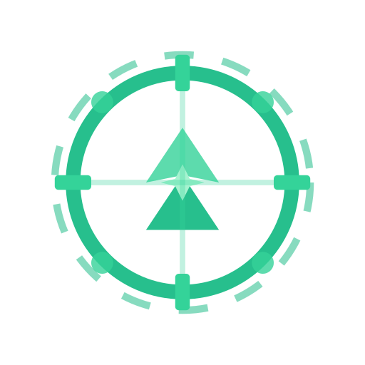
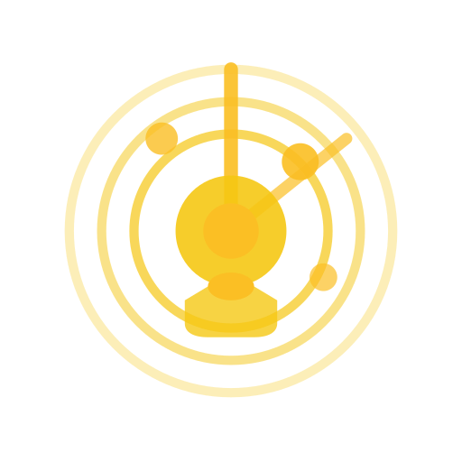
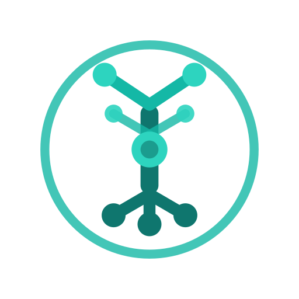
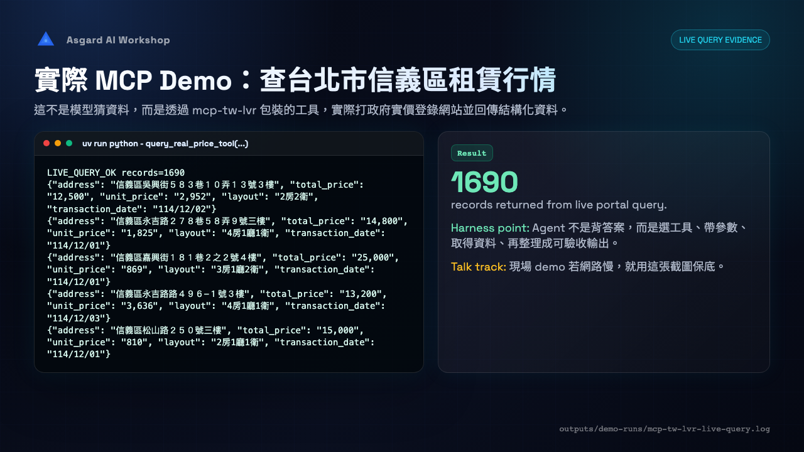
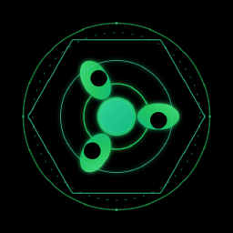

SlideShell
<SlideShell>每張投影片的外框：16:9、圓角 24、極淡陰影、右下角頁碼。詳見 §Example slide。
deck-kit 是 asgard-slides mono-repo 共用的 React 簡報元件庫 —— 暖炭黑底、單一 ink-blue 識別、kami whisper 極淡陰影。一套 tokens、primitives 與 layouts，驅動所有 deck。
底色 #141413 暖炭黑，介面全程無純黑、無冷灰，維持 kami 紙感的沉穩。
品牌色 #2D5A8A 一色到底；功能色（綠/琥珀/赭紅）刻意去飽和，不搶主色。
只用 0 4px 24px / .28 的極淡陰影，不用硬投影、不用 glow，邊界靠 1px hairline。
所有顏色都是 :root 的 CSS 變數，定義於 theme/tokens.css。點任一色票即可複製其 var() 名稱。
單一字族 Space Grotesk（variable，自帶 woff2），中文 fallback 至 Noto Sans TC / PingFang TC。標題很重（800–860）、字級大、字距收緊。
圓角是系統的個性所在：小元件 6–10px，卡片 14–18px，slide / diagram 容器 22–24px，pill 用 999px。陰影只有一階。
6px · tags, items8px · buttons, code10px · matrix, credential14px · talkbox, termrow18px · card24px · SlideShell999px · kicker, state0 4px 24px rgba(0,0,0,.28)
1px solid --linetranslucent --panel最小可組合的 building blocks。全部從 deck-kit barrel 匯入，承接 token，不自帶顏色。
<SlideShell>每張投影片的外框：16:9、圓角 24、極淡陰影、右下角頁碼。詳見 §Example slide。
<Kicker>大寫 eyebrow pill，可加 layer 後綴標示架構層。
<Tag>mono 小標籤，brand-tint 底。
<Card>variant="strong"基礎卡片，頂端有一條漸層 hairline。strong 加深底色與品牌邊框。
而是知道怎麼把 AI 從聊天工具，變成可以被委派工作的夥伴。
知道什麼時候用 chat、什麼時候需要 agent，以及工具如何接入。
<Quote>大字引言，左側品牌色粗邊。compact 較小。
<Talkbox>補充講解框，可帶大寫 label。
六層分離讓模型、工具、runtime 與治理政策各自演進，是 agent 從 demo 走向 production 的基本拆分。
<Metric>數值 + 標籤，tabular-nums。
<Button>primary / secondary 兩種。
<Node>流程圖節點：標題 + 說明，FlowDiagram 的單元。
<Credential>左側品牌色細邊的引述 / 憑證行。
<DashList>破折號項目列表。
<ValueAnchors>標題 + 描述的分隔清單。
<ModuleBlock>編號模組標頭 + 內文。
<ModuleNote>小型註記塊，mono label。
<PricingCard>eyebrow + 幣別 + 金額 + 單位 + 註。
<CodeBlock>inline 程式碼塊，pre-wrap。
<CodeCard numbered>可帶行號的程式碼卡。
1 2 3 4
{
"mcpServers": {
"fs": { "command": "npx", "args": ["-y","@mcp/fs"] }
}
}<ProductCard>Asgard 產品卡，每個產品有專屬 accent（Odin/Mimir/Sindri/Heimdall/Yggdrasil/Asgard）。

多 agent 編排與路由。

身分、審批與軌跡治理。

沙箱化執行底座。
<DemoShot>示範截圖，框線 + 圓角 + 極淡陰影，可帶說明。多種尺寸變體。

把 primitives 組成整版圖解 —— 技術簡報常見的堆疊、流程、矩陣、時間軸、狀態機與泳道。
<LayerStack>分層堆疊：每層一個 mono 標籤 + 一排 chips（或註解）。本 deck 的招牌六層架構。
<FlowDiagram>+ Diagram frame水平流程：Node 之間以琥珀色箭頭串接，外層用 Diagram 邊框（頂端漸層 hairline）。
<Steps>六格等寬步驟，編號用琥珀 mono。
<TwoColumn><CardGrid cols>通用分欄。TwoColumn 支援 1:1 / 2:1 / 1:2；CardGrid 提供 2/3/4 欄網格。
單輪問答，使用者主導每一步。
可委派的多步任務：自行規劃、呼叫工具、檢查結果並重試，直到達成目標。
<Matrix>比較矩陣，表頭品牌底色、儲存格 panel 底。
| 面向 | MCP | CLI |
|---|---|---|
| 介面 | 結構化 tool schema | 文字參數 |
| 憑證邊界 | 由 host 注入 | 繼承 shell 環境 |
| 適用 | 需治理的企業整合 | 快速腳本與本機任務 |
<Table>financial · striped資料表，支援數字右對齊、斑馬紋，以及 data-total / data-highlight 列。
| 方案 | 席次 | 月費 |
|---|---|---|
| Starter | 5 | $0 |
| Team | 25 | $480 |
| Enterprise | 無限 | 洽談 |
| 年度合計 | — | $5,760 |
<GlanceGrid>關鍵數據速覽，左側品牌色細邊。
<Timeline>水平里程碑，圓點 + 標籤 + 標題 + 註。
<StateMachine>狀態 pill + 轉移箭頭（可標事件）+ 回圈標記。
<Funnel>漏斗 / 比例條，品牌色填充 + 百分比。
<Swimlane>角色 × 階段的泳道矩陣。
<Tree>遞迴階層樹。
<TermRow>術語 + 定義 + 範例，三欄。
模型與工具之間的標準介面協定。
例：把 CRM 包成 MCP server驅動 agent 規劃與重試的 runtime。
例：Claude Code、Codex<SectionHeader><SectionTitle>章節分隔：SectionHeader 是 eyebrow + 標題 + 分隔線；SectionTitle 是標題 + lead 段。
漸進式揭露：先給路由摘要，命中後才載入完整內容，控制 context 成本。
對照常見設計系統（Atlassian、Red Hat、shadcn）與簡報版型補上的 9 個高頻元件。全部沿用既有 token 的語意色（--good / --warn / --bad / --brand-on-dark），未新增任何顏色。
<Callout variant>語意提示框：info / good / warn / bad，左側 accent 邊 + tint 底 + 圖示。比 Talkbox 多了狀態色。
遠端能力建議用 HTTP MCP server，本機工具用 stdio。
三檔 demo 任務成功率達 99.2%，可進入治理上線。
高風險動作須經人工審批，並寫入軌跡。
切勿讓 agent 繼承 shell 環境憑證跨越邊界。
<Badge status>語意狀態 pill，含狀態圓點。Tag 之外的「狀態」表達。
<Persona><Facepile>頭像 + 姓名 + 角色；圖片或縮寫。Facepile 疊放群組。

<BigStat>單一巨型 KPI 數字 + 標籤 + 漲跌。
<ProgressRing pct>環形百分比（conic-gradient + mask 甜甜圈）。
<Checklist>✓ / ✕ 語意清單，用於 production checklist。
<Legend>圖表 / 圖解的色彩圖例。
<Quote cite>Quote 加上 Persona 署名 —— 引言頁的標準寫法。
<Agenda>編號議程 / 目錄，可帶時間與「進行中 / 已完成」狀態。
<Compare>優劣 / 取捨雙欄，綠加號 vs. 紅減號。
把 token、primitive 與 layout 組成一張真實的 16:9 投影片 —— 即 deck 中的「六層架構」頁。
外殼 Deck.tsx 負責所有 deck 共用的導覽行為；投影片只管內容。
所有投影片在一條 translateX 軌道並排；垂直捲動由 .slot 容器擁有，不要在 slide 上加 overflow-y。
方向狀態機 + 8px dead zone：手勢確定為水平前不動 drag state，垂直捲動不會誤觸換頁。
左右鍵 / 空白鍵換頁；hash 深層連結讓每頁可被直接分享。
刻意只渲染文字卡片（編號 + section + 標題 + 主題色），避免行動裝置渲染上百張真實投影片崩潰。
選用的 chapters.ts 傳入 DeckProvider，在 overview 依章節分群；startSlide 為 1-indexed。
所有 window 存取都在 effect / handler 內，parseHash 與 discoverSlides 為純函式。支援 Playwright 驅動的 PDF / ZIP 匯出。